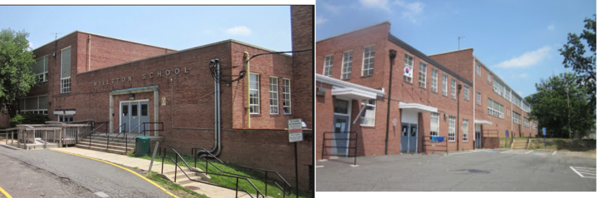

Disclaimer: I haven’t met with my community partner yet — I’m going to update this once I meet with them and have more context!
I am partnering with the Design Studio for Social Intervention (ds4si) to co-design the Festival of Counteratmospheres, taking place in June. ds4si has a wealth of experience co-designing interventions, installations, events, workshops, and more with communities in Boston. From delving into their past projects, I can see that they are actively engaging with the principles of design justice. I am really looking forward to learn from them and to share any useful skills and resources I might have.
In their past projects, knowledge is constructed with the communities at stake, rather than constructed for communities. In fact, many projects start with an open question that invites responses from the community, like visioning workshops. Sometimes, these responses are turned into “productive fictions”, like Public Kitchen. The knowledge that is produced with the community can then be disseminated in the forms of physical zines or digital resource guides, like the Social Emergency Response Center Manual. This then provides a framework for organizations and individuals outside ds4si to create their own projects and events.
Values
ds4si prioritizes marginalized communities — the groups that make up the horizontal public. Their design process reflects this prioritization, by both inviting and meeting community members where they’re at in all stages of the process (from ideation to execution). Accessibility is a key concern emphasized in ds4si’s projects, reflected in choices of meeting spaces, event spaces, and materials.
Stakeholders
So far, I understand the stakeholders of this project to be the community members participating in the organization of the event and the event itself, the ds4si organizing team, and myself. I see myself benefiting from this project by having the opportunity to observe and practice co-design principles in action.
Outcomes
This festival will create multiple counteratmospheres that can serve as spaces for the Boston community to convene and to generate more ideas for the future.
I am working with Annie on the Boston Activist Organizations Hackathon project. This project is being co-developed with Professor Karilyn Crockett from DUSP, grad student Meesh Zucker, and the following community partners: the Dudley Street Neighborhood Initiative, the Boston Ujima Project, and the Center for Economic Democracy. Also involved are Ceasar McDowell’s Boston Community Learning Project, activist filmmaker Simeon Awosan, and the Northeastern University Archives & Special Collections.
The plan is that these groups and individuals will be both the co-designers of, and the participants in, the hackathon. Due to the high number of stakeholders, there is a need to ensure everyone is on the same page and address conflicts as soon as possible.
Epistemology:
Kinds of knowledge constructed:
Community activist history
Discursive and relational connections between struggles, between generations
Strategies for organizing
Strategies for teaching
Strategies for cooperative economics
Trustworthiness:
Produced out of collaboration between elders and youth in activist organizations and from affected populations
Histories are always political, and this history is clear about its politics: to accurately portray the local struggles in the Boston area from the activist perspective
How shared:
Conversation and co-design, during the hackathon
Public display in the street, after the hackathon
Dissemination of documents and films
Values:
Driving the process:
desire to teach about history of housing struggles
Importance of cooperative economy to local community empowerment
Importance of learning from elders and across organizational bounds
Potential conflicts:
Different epistemologies, approaches between elders and youth
Multiple stakeholders with multiple interests: need to make sure everyone is heard and every stakeholder’s needs are attended to
Stakeholders and desired outcomes:
Dudley Street Neighborhood Initiative
Desired outcome: gathering oral histories and local knowledge
Boston Ujima Project
Desired outcome: gathering local history and examples of resident-led efforts to create tools for cooperative economic practices at the local scale
Activist Film Project/Simeon Awosan
Desired outcome: Activists to view raw footage of Chuck Turner & Mel King, give feedback, and suggest additional content
Boston Community Learning Project/Ceasar McDowell
Desired outcome: Review and sort drop box file of notes and videos; gathering activist stories of Boston organizing to identify gaps and opportunities for public distribution
Northeastern University Archives & Special Collections
Desired outcome: public engagement with current archives and acquisition of new stories/content
All stakeholders
Desired outcome: A way for residents and passersby to encounter the “archive” on the street, commemorating 50+ years of local activism, galvanizing support for future land battles and organizing efforts
This week, I am speculating about my project I am working on with Instituto del Progreso Latino in Chicago. I am using the framework outlined by Christopher Frauenberger et al. in their paper “In pursuit of rigour and accountability in participatory design.”
Epistemology
Kinds of knowledge constructed
The biggest form of knowledge I see myself gaining is around the collaborative process. I hope that all project partners can learn more about what forms of communication and organization will work in this context to accomplish our goals of collecting and sharing out success stories from within the organization.
Degree of trust in the knowledge
I hope that the stories we are able to collect as result of this design collaboration feel genuine and connected to what’s actually going on in the city. I hope to enable the creation of stories that people trust and that people feel a personal connection to.
Potential for transfer
It would be nice to see a workflow and supporting tools that could be shared freely online.
Sharing of knowledge
I hope that I am able to help design a system of sharing and collecting stories from my community organization partner that allows community members and a wider public to see the assets and successes of Pilsen/Chicago.
Values
Driving values
I think the driving values of this project are respect for community of Pilsen and equity in decision-making.
Change of values in the process
I don’t forsee any changes of values in this process. But I do hope that project partners feel comfortable pointing out when values seem to have shifted unintentionally, or when they need to shift to respond to unforeseen circumstances.
Reflection of values in the decisions
I hope that all decisions are agreed upon with regards to the goals and expectations of this project as agreed upon at the beginning of the collaboration process. I hope this shared understanding will contribute to mutual trust and shared ownership of decisions made. And I hope my project partner’s immersion in the community they serve help guide me to learn about any of my own blindspots I may have in my current position as a student at MIT.
Outcomes
Different interpretations of outcomes
I hope the interpretations of outcomes are pretty well aligned, owing to work put in at the beginning of the collaboration to align expectations and goals
Owner of outcomes
Instituto will be the owner of the outcome, though I hope that a process we come up with can be shared more widely to other organizations that might be able to benefit from what we learn.
Sustainability of outcomes
I hope that the outcome of this project is a process that can be used for several years.
Stakeholders
Stakeholders
Right now, the stakeholders in this process are the folks at Instituto and myself. It would be nice if
Participants
I hope that we are able to share out the success stories of the community that Instituto serves in a way that affirms and creates joy. I also hope that there might be a way to share stories back with the community in a way that makes them accessible and enjoyable memories/commemorations.
Benefits for stakeholders and participants
Instituto will have a tool/workflow that helps fill a communication need, and I hope the participants are able to feel celebrated and affirmed, and possibly have access to a recording of their success in an enjoyable way.
End of project
When this project ends, I hope that I am able to integrate this work with other projects I am working on with Instituto, and help maintain/refine this project as needed. However, I do hope that this project can develop something useful for Instituto, that they are able to sustain without much outside intervention. I hope I can help share any lessons learned with other similar groups as well.
(Note: This was written pre-meeting with the community partner(s). Will be updated with more accurate information later.)
We will be developing a spring hackathon in conjunction with a number of local activist networks in honor of the 50th anniversary of the Boston anti-highway protest of 1969, which successfully prevented the construction of a massive highway system that would have (and, to some degree, still did) destroy and uproot numerous Boston neighborhoods. In organizing this hackathon, we hope to connect many of the Boston-area organizations preserving activist history while honoring and celebrating the history of activism in the city.
This will encapsulate a number of events, including but not limited to public displays, intergenerational engagement, street-level interventions, and public engagement with archival materials. Footage from the 1969 protests will be lifted from several archives/special collections also involved in hackathon creation. (Many of the organizations will be drawing from this material.)
In developing this hackathon, we will be working directly alongside the community and making their needs the topmost priority. As each organization involved has different contributions to to make to the upcoming event, we imagine that the ultimate decisions will be community-led and controlled.
As we will be working with several organizations, ranging from oral history groups to archival film sources, each with their unique goals and desires, there will undoubtedly be moments where people may disagree over design decisions. In such a case, it will be necessary to facilitate discussion between these organizations and create compromise.
In this post I will describe a workshop course that I took last semester. I am keeping the details relatively vague for purposes of anonymity.
The focus was designing safety interventions. In this course we went through a design process: define the problem, understand the users, ideate, prototype, present. This framing separates the “designer” from the “user” of the design—it is clearly design for, not design with. The designers were totally isolated from the user community, as the user research component (phase two—understand the user) basically just consisted of interviewing people about their general feelings on safety. An orientation towards innovation was a given, as there was no attempt to look for what is already working. The “problem definition” framing at the outset exemplifies this.
We were then told to develop “personas,” imaginary users who could generate some use cases for our designs. This is sort of the opposite of the design justice principle to “center the voices of those who are directly impacted,” as we actually centered our voices even when we were supposedly designing for others. Though we were meant to assign real responses from our interviewees to our invented personae, we were essentially instructed to speak for an imagined other. In the ideation and prototype stages, our reference point was our personae, not any real user.
Certainly the design process was done with the best of intentions, and to some extent, design justice principles #1 and #9 were followed. But I cannot see how any of the others were—somewhat troubling for an introduction to MIT’s design philosophies.
I participated in Hack for Inclusion this weekend, and this is what I found to be successful and lacking from a Design Justice perspective:
What was successful:
The event focused on using design to sustain and empower our communities.
This was reflected in the challenges that the Hackathon centered around.
Everyone felt like an expert.
On my team, everyone had meaningful ideas and skills to contribute. And this includes people we reached out to for interviews.
What could be more engaged:
The event could enable more community-led and controlled outcomes.
Apart from user interviews, we had no interaction with the actual community we were working on a solution for. And that was part of the issue — it felt as though we were building for a community rather than building with a community.
The event could further encourage engaging with existing community solutions.
During the research stage, the emphasis was completely on identifying problems rather than identifying existing solutions. During the prototyping stage, the emphasis seemed to be on building something new and novel.
The event could place more emphasis on “change as emergent from an accountable, accessible, and collaborative process” rather than as a point at the end of a process.
At the end of the hackathon, everyone presented their “solutions.” And while the organizers did encourage people to continue building and refining their solutions, there was no accountability otherwise.
This past weekend, I participated in Hack for Inclusion. While I’ve done coding hackathons before, this was my first design hackathon. This hackathon was much more structured than ones I’ve done in the past, and it was also split into two days rather than being an overnight affair. Before the hackathon, we got to rank three questions we were most excited to tackle. I ended up being assigned to my first choice (which was not the case for everyone, so I’d say there were varying levels of enthusiasm on my team), which was fostering inclusive commercial development in Somerville.
Throughout the hackathon, all the teams were essentially guided through the “human-centered design” process, from user research to prototyping. For many steps of the process, we were given around 30 minutes to an hour (with the exception of prototyping, for which we had several hours). Our team was also assigned a mentor, who was a government employee working on development in the City of Somerville. During the process, she offered us feedback and gave us more context about Somerville from her own experiences of working with developers and business owners.
“Talk less, make more!” 🤔
Each step of the design process felt very rushed, and my team definitely struggled to reach consensus at times. We all came from very different backgrounds career-wise (academia, law, consulting, non-profit) and identity-wise. I really appreciated getting to meet and collaborate with this diverse group, but the social friction was high at times. This reminded me of Lily Irani’s piece last week, on how hackathons often promote low-friction environments where you can quickly come to consensus and build, build, build. Funnily enough, every time our team took some time to come to a consensus, someone on my team tried to emphasize the “move fast and break things” mantra.
Brainstorming ideas with my team
Because we were given, by far, the most time to prototype, I think this led most teams, including ours, to focus on building a solution rather than taking time to understand the problem. I felt that the short hour we had to conduct and reflect user interviews was not enough (and I also took issue with the fact that we were encouraged to cold call business owners for interviews…1) do these business owners have time for spontaneous interviews on a Friday? 2) without prior relationships and trust building, how much information would they be willing to disclose? 3) there was no accountability in terms of us following up with them and sharing the potential solution we were working on). After some brainstorming and a lot of conversation, we realized how little time we had left, so we quickly decided to focus our solution on building a local community fund that could support minority business owners who need capital (and might be excluded from traditional forms of capital like bank loans) to grow their businesses. I thought this solution was promising, but we got caught up in the rush of feeling like we had to build a “product.” So we ended up framing the idea as a mobile app (which in retrospect, was a lazy solution that won out over other ideas we had for in-person relationship building between business owners and the city…and totally perpetuated technochauvinism). I distinctly remember someone from my team saying that we needed a “flashy” solution to impress the judges. 🤦🏻♀️So, yes, we ended up presenting this app called SomerFund:
SomerFund, a shiny new app
Overall, I learned a lot from this event. Was our solution a success? Not really. Did we really contribute meaningfully to minority business owners? No. Was this overall event successful? I think that will only become more clear after following up with teams in later months to see if any community relationships were sustained. But I was inspired by the ideas we had during our brainstorming process. It was great to meet people outside of MIT. I learned more about Somerville. And it was ultimately a good space to reflect on principles of design justice, and how (or whether) a short-term hackathon can lead to meaningful, community-led design solutions.
Willston Multi-Cultural Center entrances. Falls Church, VA
I am reflecting on my summer breaks back in middle school, growing up. I spent my summers in the DMV area at my community center: Willston Multi-Cultural Center. Every day we took part in various activities that rotated, including field-trips and county-wide cook outs and events across community centers. We had a blast. Each normal day though would end with a couple of mandatory, but free hours in the computer clubhouse. Once or twice there were optional demos that a staff person would walk us through if we cared to listen or follow along. Otherwise we could sit at one of the computers in the clubhouse and chose our own adventure.
In the beginning I remember dreading these couple of hours at the end of the day. I didn’t care about computers and they intimidated me. I got anxious about it. I eventually got into a flow with a few of my girlfriends and my sister, putting together cute outfits on animated doll fashion sites like Roiworld.com for hours. We got really into the styles and instead of listening in on the graphic design or character world-building/SIMS demos, I posted up at my favorite computer and dressed up dolls to match whatever story line I had in my mind that day.
As time went on and I grew more comfortable in the computer lab space, I started to branch out some more and snoop over the shoulders of my other friends’ computers. I would find people on all sorts of websites , watching videos, playing games, building virtual things on various design platforms that they were all super into. I remember being shocked in some of the skills some of my friends had on the computer. Including my friends who spoke mostly Spanish and who I didn’t always get as much of a chance to get to know them deeply because of language barriers in part. I remember all sorts of interactions that developed naturally over time in the clubhouse- from watching in a huddle around a friend to cheer him/her/them on for scoring the next point, to just gazing in awe as another friend designed an elaborate world, to hanging out with a staff in the corner who sketched gorgeous mythical characters quietly.
I remember learning not just a whole wide range of what computers could do, but also endless interesting and intimate things about my peers. I felt empowered in that space to explore without worrying about outcomes or my tech skills. Shaped more by social dynamics surrounding the technologies than anything else most days.
The computer clubhouse initiative spanned a network of community centers in the county, and the one at our center happened to be super free-flowing and open for us to create our own experience. It felt more like recess than anything else. I think that this design space embodies all of the design principles quite closely, especially numbers 1,2,3,6,7,8, 9, and 10. 5 could have been more engaged, but I don’t think it was needed because everyone felt like an expert in their own way, designers/staff leaders included!
Hi everyone! As I’ve been working with the Black Mother’s Breastfeeding Association in Detroit, we have been brainstorming ways that a “hackathon-style” event could support their work. During our last meeting, we’ve started brainstorming a distributed hackathon during Black Breastfeeding Week on August 25th-31st. While the Project Director is tinkering with the budget and exploring capacity, I started to research and collate distributed hackathon models to learn from here: http://bit.ly/distributedhackathons. If anyone knows of former events I can learn from or organizers I can connect with- I super appreciate the support. Thank you!
(For anonymity’s sake, some of the MIT-specific names and spaces have been changed or removed.)
There are several educational technology-based labs within MIT that collaborate regularly. Every month, one of these labs hosts a monthly playtest where researchers present their projects to people outside of the department (and outside of MIT) and allow these people (user testers) to test the projects for potential usability. While this is not a design space in the strictest sense – the projects in question were premade – the playtest space gives user testers a unique opportunity to see works in progress and offer feedback based on their own experiences and expertise. It’s a unique opportunity to share our knowledge and tools with the greater community.
As someone who has presented projects several times in these playtests, I have noted that we rely heavily on the user feedback in order to improve our games, simulations, and experiences. In other words, everyone is an expert based on their own lived experience. Whether the user tester in question is a student, teacher, professor, scientist, or concerned citizen, their input matters greatly to the future of each project. As a educational technology creator, I ascribe to iterative design – the theory that design takes a circular path and can be improve through continuous feedback, change, and reiteration. Change is constant and ongoing, and emergent from an accountable, accessible, and collaborative process.
However, I realize that these playtests are limited in terms of design justice. The fact that we present half-complete projects over potential ideas to users is limiting in itself; we create what we believe is useful and show it to a community that may or may not need it. While we do work with schools and organizations from the beginning of the design process, we could only do so much within the playtests to create community-led and -controlled outcomes. The users were required to work with our preexisting structures to offer criticism and feedback.
Another major issue was the imbalance of power that existed between the researchers/designers and the user testers. Although we regularly encouraged users to speak up and make their voices heard, this was not always easy. There were far too many times where users became intimidated by the technology and immediately shut down. I still recall the dozens of users who told me “I’m not a gamer” or “I don’t know computers” and refused to offer feedback because they believed that they were not “smart enough” to do so. The fact that users felt uncomfortable was entirely our fault. It is the priority of the designers to not only make users heard, but feel empowered to speak up.
The playtests provide an opportunity for teachers to tell us about what may “already be working for them” and for other educators. However, the limited demographic representation of user testers was yet another issue. Many of the user testers were MIT students and staff who heard about the event through email or word of mouth; others were outside-of-the-bubble locals who receive newsletters through the edtech labs or are friends and former colleagues of the designers. Many of the educators represented, thus, were from schools in the greater Boston area who regularly work with MIT. What of people who may not have had the means to come to MIT, or lacked the connections to receive news about our playtests? What of the children and students who would be most directly affected by our projects, who rarely if ever appeared at the playtests? There were large swathes of the Boston community that were strongly underrepresented among the user tester population which compromised our ability to deliver true design justice.
While playtests are only one step within the greater circle of iterative design, it is vital that we connect more deeply with the community we serve throughout the entire process and reach far beyond the MIT bubble to do so.
While working at Optum (United Health Group,) I was part of a medium sized team tasked with guiding the development of an app to help veterans re-acclimate to civilian life. We conducted interviews with veterans, organizers, and veterans’ family members. We compiled our findings, debated what they meant, and ultimately, provided a laundry list of features to the development team.
Only insiders were involved in the design work.
Designers were all employees of Optum. This manifested more technical solutions than were called for.
Designers were mostly male, and mostly white or eastern asian.
Design conversations took place in Optum’s corporate headquarters, in a locked room. Not even all employees were authorized to enter.
I think this stands out to me now that I’m not in that environment. At the time, I was happy to be interviewing people in the real world, and thought that human centered design was the best that we could do. It was more empathetic than the other work I had done at Optum, which was mainly focused on efficiency in our call centers. In hindsight, it is a shame that no impacted veterans were in the room when we were debating the features that were and were not useful. Something tells me that they would have shot down many of the ideas that us 20 somethings thought were appropriate.
The product shall be an app.
When interviewing the veterans, it became clear that they already had substantial assets for their recovery. These were often support groups hosted in their local church basements, and friends willing to be on call in a crisis. The whole time we were compiling our interview results, it was very clear that the expected output of our time would be plans for an app. With that in mind, we set to work creating features. Small groups imagined calendar helpers, gamification of therapy, enhanced chat clients, and more.
Ultimately, the one feature that did get implemented was a video series — pretty low tech. This was a bit of an about-face on the design team’s part, but a good one in my opinion. In the end, though, we shouldn’t have spent a whole week talking about apps. It was abundantly clear from the interviews that mobile apps were not a welcome approach. If we hadn’t wasted so much time trying to imagine a mobile app, we may have been able to provide something better than a (very basic) video series.
Lack of true institutional support.
Some part of me feels like the whole endeavor was akin to government hackathons “as an exercise in the State feeling good about itself.” If United Health Group really wanted to get behind veterans re-entering society, they would support the organizers that we interviewed rather than trying to commodify their insights in an app.
Conclusion
The fact that this design endeavor was pursued by a corporation seriously compromised it in terms of design justice. The well from which we drew our designers was seriously tainted by racial bias in hiring. The problem we were trying to solve was framed as something that must be solved with technology from the beginning, but ultimately, was not. The project was shuttered about 6 months later. This was touted as a win — we “failed fast.” At least we did no harm. I’m not entirely sure that we had to fail, though. By including the insights of our interviewees in a more meaningful way, we could have potentially helped them to make a positive difference in their comrades’ lives.